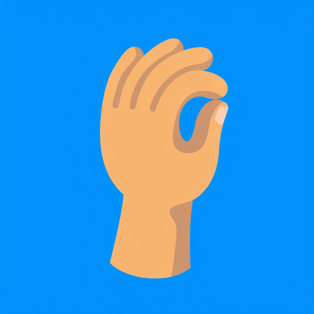
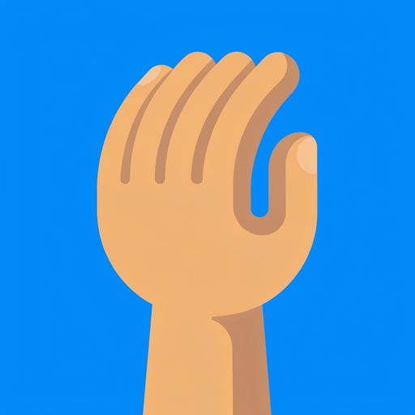
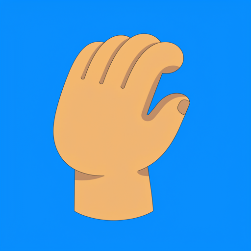
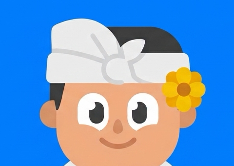
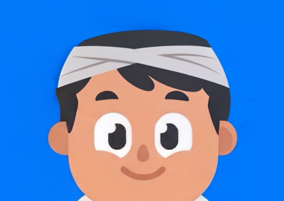
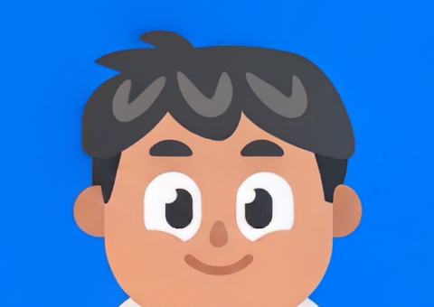
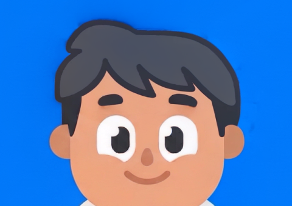

Belum ada yang dipasang ke Rive. Pilih satu tangan dan satu kepala. Yang bergaris kuning adalah saranku.
Tangan memegang ujung udeng (V4.1, $0,105)

Tangan 1: kurang cocok. Jempol dan telunjuk mencubit, jadi terbaca seperti tanda "oke", bukan mengangkat udeng.

Tangan 2: saranku. Jari melengkung ke kanan seperti mengait tepi udeng, gemuk dan tanpa outline. Yang perlu dirapikan: kilap kuku dibuang, warna disamakan dengan kulit Wayan, lengan dipotong di pergelangan dan diselipkan di balik manset.

Tangan 3: gagal. Ada garis luar hitam tipis, tidak sesuai gaya Wayan.
Kepala tanpa udeng (inpaint V3, $0,12)
Yang digambar ulang hanya area udeng, rambut atas dan bunga. Wajah di luar area itu tetap sama dengan aslinya (selisih rata-rata 3 dari 255). Nanti yang diambil hanya rambutnya; wajah, alis dan telinga tetap dari rig.

Asli (pembanding)

Kepala 1: gagal. Masih ada ikat kepala abu-abu.

Kepala 2: kurang rapi. Ada coretan "V" abu-abu terang di rambut, dan ujung rambut atasnya mencuat acak.

Kepala 3: saranku. Bentuk rambutnya bulat mengikuti kepala, poninya rapi, dan sisi kanannya menyambung ke cambang. Yang perlu dirapikan: garis gelap di tepi rambut dilebur jadi satu warna rambut Wayan, supaya tanpa outline seperti rambut aslinya.